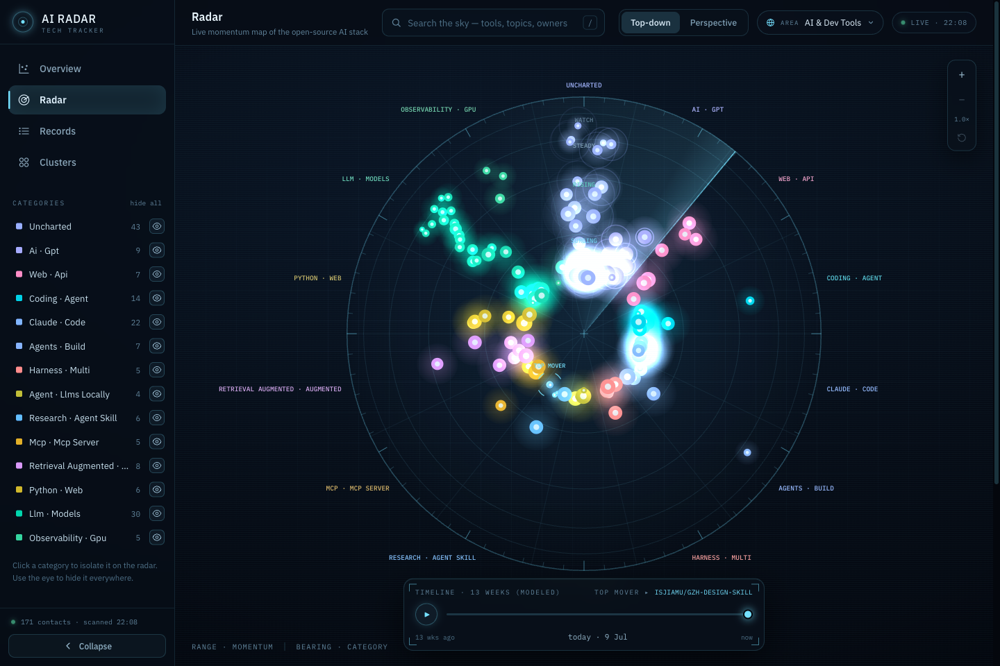
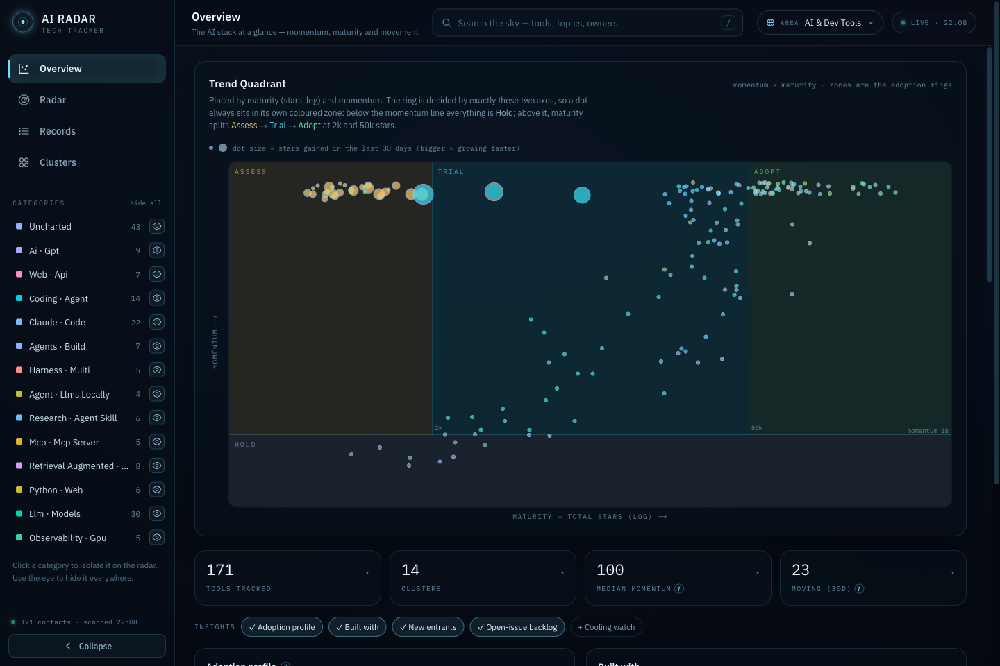

A living technology radar for AI dev tools: trending GitHub repos, clustered by what they do and ranked by momentum — re-scanned continuously and plotted on a live scope. The Thoughtworks radar's mental model, kept current by data instead of a twice-a-year PDF.
Every signal on the radar is computed live from real repository data — nothing is hand-curated, and every number explains itself in the UI.
Tools are embedded by what they say they do, then grouped with HDBSCAN and labelled by c-TF-IDF. New categories appear on their own.
Each tool gets a live ring from maturity × momentum — with the exact reason shown on hover, Thoughtworks-style.
A rotating sweep, a 13-week timeline scrubber, zoom & pan, and SSE updates the moment a scan lands.
Swap the tracked area from the UI — AI, Rust, DevOps, or add your own GitHub topics. The radar re-ingests and swaps cleanly.
Tools plotted by momentum (range) and semantic category (bearing). Hot contacts glow; the top mover gets the reticle.

the live radar — 171 tools, 14 emergent clusters, one sweep

the overview — trend quadrant with real adoption-ring zones, drill-down KPIs, insight panels
The whole pipeline is transparent — and explained inside the app, with the live parameters it actually ran with.
Postgres, API, worker and web UI all come up from one compose file. A GitHub token is optional — it just makes discovery faster.
# clone git clone https://github.com/pascal-giessler/ai-tech-radar.git cd ai-tech-radar # optional: GITHUB_TOKEN raises the scan rate limit 60 → 5000 req/h cp .env.example .env # the whole stack docker compose up --build # → open http://localhost:3000 and watch the first sweep land